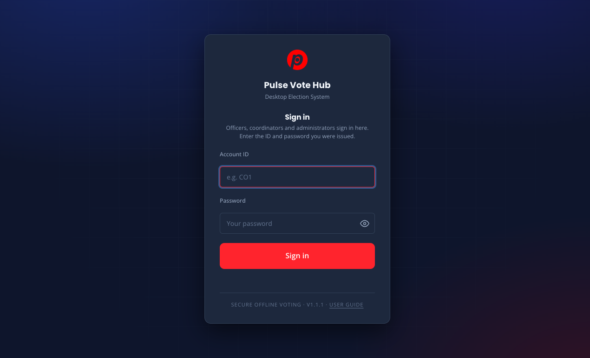
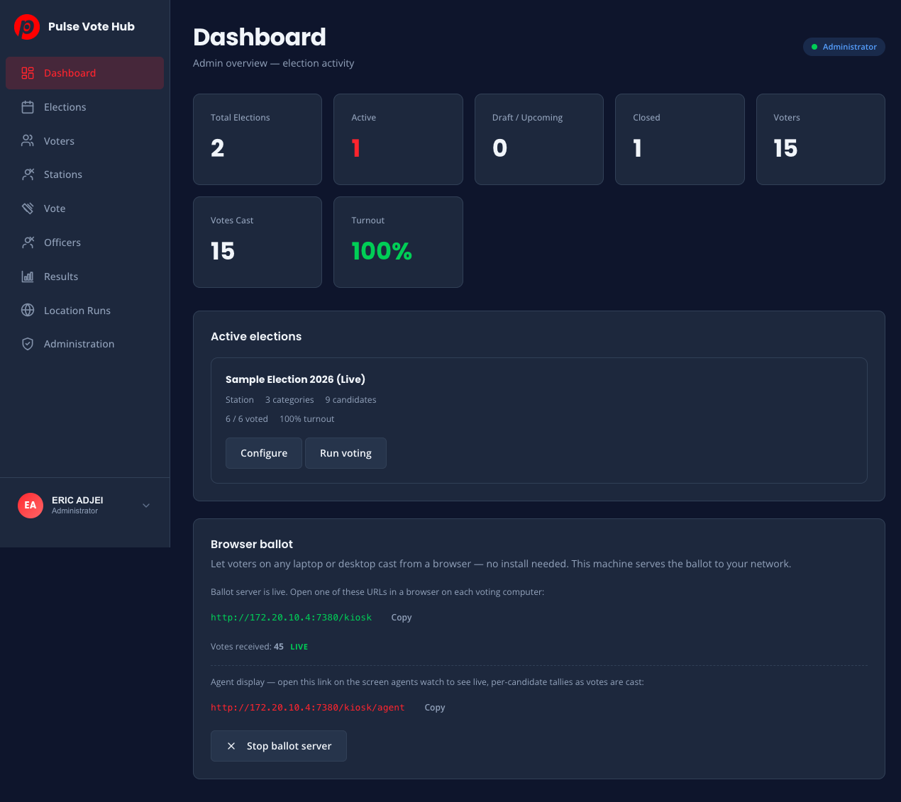
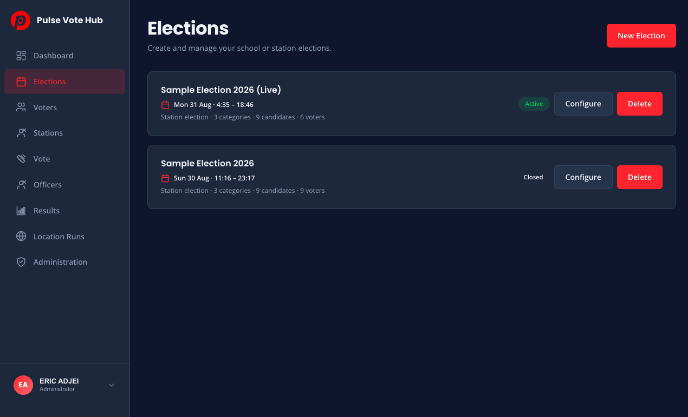
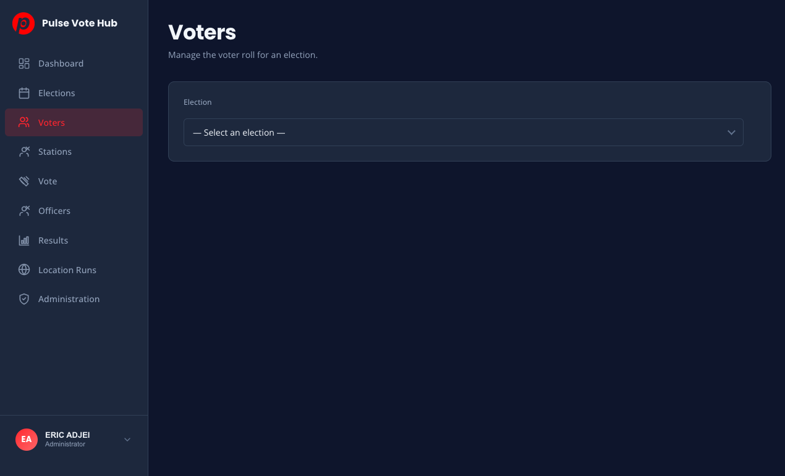
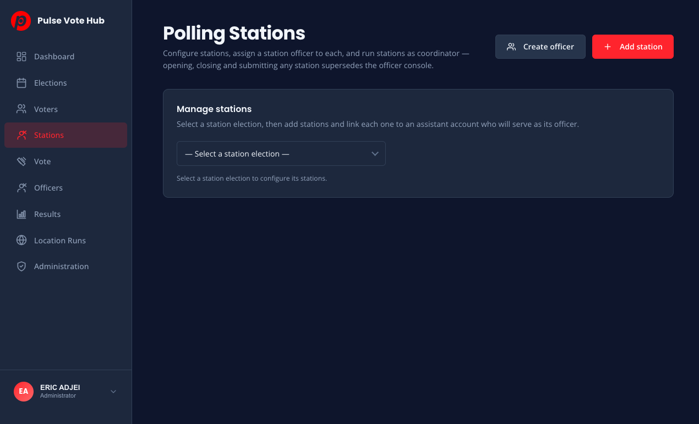
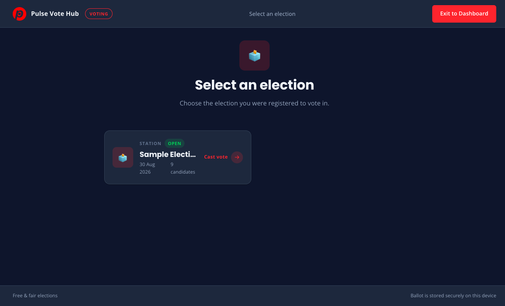
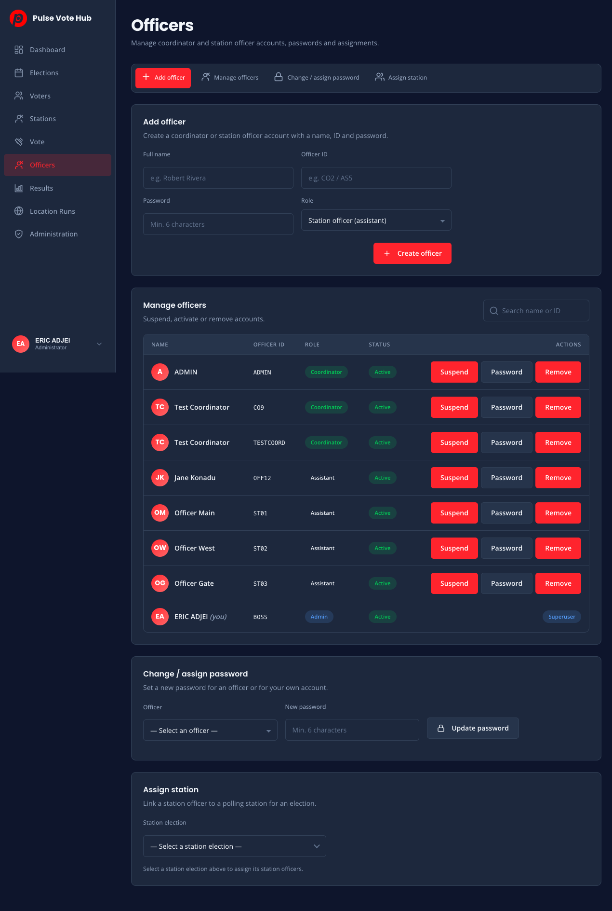
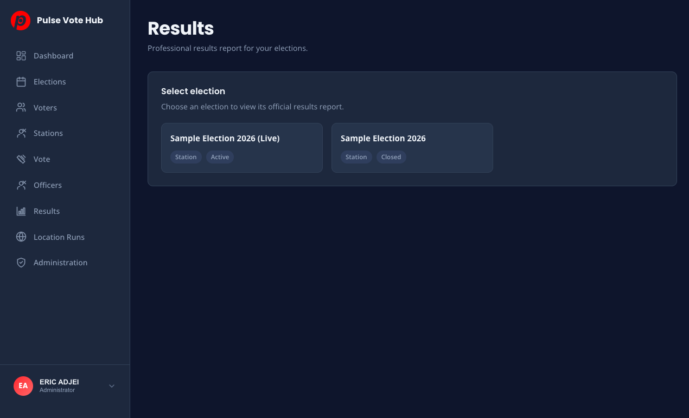
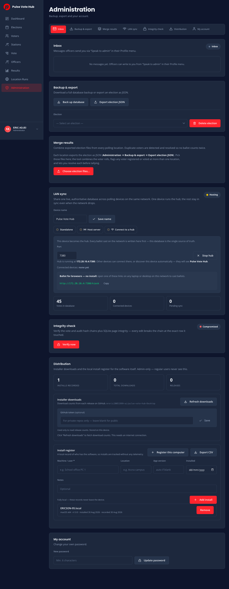

User Guide
A complete manual for running secure, offline-first elections with Pulse Vote Hub — from your first account right through to the official declaration of results. Everything runs locally on your machines: no internet connection is required, no data ever leaves your devices.
Getting started
Pulse Vote Hub is a desktop application. Install it on a computer that will act as the election headquarters, and on any additional polling devices you plan to link over your local network.
Your first run
- Install the app. On macOS, open the downloaded DMG and drag Pulse Vote Hub into your Applications folder; on Windows, run the installer and follow the prompts.
- Launch the app. On a fresh install you land on the “Set up your coordinator” screen.
- To run an entire election yourself, choose the “Set up as an Administrator” button at the bottom of that screen (instead of creating a coordinator), and create the superuser account — full name, admin ID and a password of at least 6 characters.
- After the admin is created the app shows a recovery code (e.g.
REC-XXXX-XXXX-XXXX) once. Save it somewhere safe offline. If you ever forget the administrator password and no other admin can sign in, this code is the only way back in — from the sign-in screen tap Forgot your password?. - Alternatively, create a coordinator first and add an administrator later from Administration.
Signing in
Every person who uses the app is an officer with an officer ID and password, and everyone signs in through the same single form on the welcome screen — administrators, coordinators and station officers alike. After signing in, station officers assigned to a station open the station portal; everyone else sees the Dashboard.

Roles
| Role | What they can do |
|---|---|
| Administrator | Everything in the app for running elections: manage all officers and elections, read the inbox, back up the database and restore from a snapshot, merge results, run LAN hosting and integrity checks. |
| Developer | Everything an administrator can do, plus the deep system tools: export and delete elections, import an election snapshot, control installer downloads and the sign-in used to add developers. The Developer section is not shown to regular admins. |
| Coordinator | Create and run elections, manage voter rolls and officers for their elections, view results and the declaration. |
| Station officer (assistant) | Operates the polling station portal on voting day: open polls, check voters in, manage the queue, close and submit results. Assigned to a station by an admin/coordinator. |
Dashboard
The Dashboard is your overview: how many elections you have, how many are running, and how voting is progressing.

- Stat cards — total elections, active, draft/upcoming, closed, voters, votes cast and turnout percentage.
- Active elections panel — shows each election currently running with its category/candidate counts, how many of the roll has voted, turnout, and two actions: Edit (dimmed, since an active election’s ballot is locked) and Run voting (open the kiosk voting screen). Edit a draft/upcoming election on the Elections page instead.
- Status pill — confirms what you are signed in as.
Elections & the ballot
Everything about one vote — categories, candidates, schedule and status — lives in a single election. You build it here, then run it from Stations/Kiosk and report it from Results.
Creating an election
- Go to Elections and choose New Election.
- Give it a title and pick the type: School election (single locations or inter-class) or Station election (one or more polling stations that report separately and combine later).
- Set the status (Draft while you prepare) and the voting window — start and end date & time. The status automatically advances from Upcoming to Active to Closed on schedule.
- For station elections, set the close grace: how many minutes voters already in line may finish after polls close, and the maximum allowed on the station page.
- Press Save Election.

Building the ballot
- In the builder, go to “Categories & candidates”.
- Add a category (e.g. President) and choose how many votes a voter may give per category (default: one).
- Add candidates with an optional photo. Ballot numbers are assigned automatically per category.
- Press Preview Ballot to see exactly what voters will see, then publish when ready.
Statuses
| Status | Meaning | Ballot editable? |
|---|---|---|
| Draft | Being prepared; not open to voting. | Yes |
| Upcoming | Scheduled; not yet open on this device. | Yes (until it starts) |
| Active | Voting is live. | No |
| Closed | Polling ended; results can be certified and declared. | No |
Voters
The voter roll is the list of people entitled to vote. Each voter holds a voter ID and an access password — both are required at the kiosk, which guarantees one person, one vote.

Adding voters
- Add Voter — create one voter at a time (name, optional voter ID, optional station). After adding, the app shows the voter’s opening password.
- Import CSV — paste a CSV with columns voter_id,name,assigned_station. The app reports how many were imported and how many were skipped as duplicates.
- Auto-generate — produce a batch with one of four schemes: Name + Index, Index only, Index + Phone, or Voter ID Range (e.g. V0001 → V0050). Enter content, then a count (1–1000). Result shows the passwords.
Using the roll
- Search by voter ID or name; the table paginates.
- Each row shows Ready or Voted.
- Reset (on voted voters) undoes their ballot — use it only with evidence of a mistake; the action is audited.
- Remove deletes the voter from the roll.
- Clear all empties the entire roll for the election (confirmed, irreversible).
- Export the roll as CSV, PDF, HTML or a print-out for check-in on paper if you prefer.
Stations & voting day
Station elections use polling stations, each with its own station officer who runs the e-pollbook: check voters in, manage the queue, and submit the sealed packet when polling ends.

Setting up stations
- In Stations, choose the station election.
- Create the station (name, location, code — e.g. BLK-A).
- Create a station officer account (or link an existing assistant), then assign that officer to the station from the table.
- Assign voters to stations (from the voters screen) so each location sees only its local roll.
The station portal (voting day)
Station officers sign in and land straight on the station portal, which shows registered, checked-in, in-queue, ballots cast and grace votes, plus live countdowns.
- Open Polls — records a zero report (no ballots before opening) and starts the queue.
- Check voters in — search the e-pollbook, verify identity in person, and confirm. “Checking them in consumes their ballot entitlement.”
- Point voters to the voting screen (Vote in the sidebar) where they authenticate and cast on the kiosk.
- Close Polls — choose a grace period (up to the election max) so voters already in line can finish; or zero to end immediately.
- During Grace Period, checked-in voters finish while the queue is closed; end early with Close Queue Now.
- Submit Results — review the figures (verified voters, votes cast, grace votes, papers used). The app auto-checks them; when all pass, Seal & Submit the packet.
Use Log incident to record disputes, technical or security events; the activity log keeps an auditable timeline of everything at the station.
The voting kiosk
The Vote screen is the public terminal: a large, clean ballot interface that locks down the device so nothing can interrupt casting.

Voter journey
- Select election — cards show which election is open. Non-open elections are blocked with a clear message.
- Voter sign in — the voter enters the voter ID and password they were issued. Ballots are private: the vote is never linked to the person in the results, only to the single entitlement.
- Forgot the password? — the kiosk offers self-service recovery using the voter ID plus the name or phone on the roll, and displays the password securely on screen.
- Cast the ballot — the ballot runs one category per step. Tap a candidate (categories limited to one vote advance automatically); multi-vote categories use Continue. Back returns to earlier categories with choices preserved, a progress bar and “Category X of Y” show where you are, and Review & Cast ends with a confirmation summary (a blank ballot is allowed with a clear warning).
- Thank you — “Your vote has been recorded securely,” with a chime, then it resets for the next voter automatically.
Officers
Manage every account in the system — coordinators, station officers and administrators.

- Add officer — full name, officer ID, password (min 6 characters) and role (Station officer or Coordinator).
- Manage officers — search the list; see role and status pills (Active/Suspended); Suspend blocks sign-in instantly, Activate restores it, Remove deletes the account, and Password jumps to the change-password form.
- Assign station — link a station officer to a polling station; a station can have exactly one assigned officer.
- My account (in Administration) — change your own password.
Results & the declaration
Results is the official reporting centre — live tallies while voting runs, and a certifiable report once it closes.

The results report
- Status chip shows LIVE, UPCOMING, ENDED or DRAFT. Before the window ends, the report is locked with a countdown.
- Winner cards and “Winners by Category” — a W for winner, T for tie, or “No votes cast”.
- Stat tiles — total votes, registered, voters cast, turnout bar, candidates and categories.
- Charts — vote-distribution donut and a per-category bar chart.
- Ranking tables — rank, candidate, votes, percentage, progress per category.
- Station breakdown (station elections) — filter the whole report by station; each row shows status, registered, cast, turnout and submission badge.
Exporting and declaring
- CSV / HTML / PDF / Print export the full report for records or notice boards.
- Official Declaration opens the formal document: certification preamble, “Duly elected” winners, per-category certified results with ballot numbers, and a signature block (Chairperson & Secretary).
- The declaration only publishes for closed elections, and can be printed or exported as HTML/PDF.
Administration (admin only)
The system control room. Only the administrator account can open this page.

Inbox — “Speak to admin”
Officers send you short notes from their Profile menu. Unread messages show a badge on the Administration nav item and in the Profile menu. From here you can mark each message read (or all), delete a message, or clear the whole inbox. Message actions are audited.
Where the backing up tools live
Backups and recovery are not part of Administration — they are on the Dashboard → Backup & recovery panel (see chapter 10) and, for the developer-only tools, the Developer section. Quick map:
- Dashboard → Backup & recovery (admins & developers) — automatic snapshots, “Back up now”, and “Restore from file…”.
- Developer → Back up database (developers only) — snapshot the entire database to any location.
- Developer → Export / Import election JSON (developers only) — package an election (voters, votes, integrity data) into one portable file, or bring a previously-exported election back in. The export is also the file used by the Merge tool.
- Developer → Delete election (developers only) — permanently deletes an election and all its categories, candidates, voters and votes (confirmed; cannot be undone).
My account
Change your own password here (min 6 characters).
Backups & recovery
Your election database is the single most important piece of system data. Pulse Vote Hub takes snapshot copies of it and can verify and restore them with one click. Available to any administrator or developer from the Dashboard → Backup & recovery panel.
Automatic backups
- Turn the Automatic backups switch on.
- Set Every to how often a snapshot is taken (minimum 1 minute; 1–2 minutes recommended on election day), and Keep to how many old snapshots to retain (the rest are pruned automatically).
- Optionally pick a backup folder — a separate disk or USB drive is ideal, so an outage on the main machine cannot take the backups with it.
- Press Save settings. The panel then lists every saved snapshot with its size and age.
Back up now
Press Back up now to capture an immediate snapshot, ignoring the schedule. Do this before any major change — adding a voter, editing a ballot, or clearing results — and at every milestone (opening, close, certification).
Restoring after a problem
- Open Dashboard → Backup & recovery and find the snapshot from just before the incident.
- Press Restore on that snapshot — or Restore from file… to bring in a backup you saved to a disk or USB drive (for example on another machine).
- The app verifies the backup fully first (vote hash chain, audit hash chain, signatures, page integrity), pauses the LAN, swaps the database, re-verifies, and rolls back automatically if anything fails. You are signed out and sign back in — your data is back to how it was when that snapshot was taken.
Merging results across locations
When several stations or locations run independently, you combine their exported files into one certified result — with duplicate voters detected and resolved so no ballot counts twice.
The workflow
- From each location, export the election: Developer section → Export election JSON.
- Bring the files here (any storage medium) and choose “Choose election files…”.
- If the files describe the same election, the workspace builds automatically; if they differ, pick which election to merge.
- Review the summary — locations, registered, votes cast, turnout — and the duplicate detection table:
- For every duplicate, choose a resolution per voter: keep the ballot from a specific file, or exclude the voter from both tally and registration.
- Confirm; the app tallies the merged result and shows the full report (winners, categories, charts, ranking tables).
- Export the certified merge: CSV, HTML, PDF, JSON snapshot (portable record) or the Duplicates report for your audit file.
LAN sync (one live database)
Connect polling devices on the same network so they share one authoritative database in real time — even when the network drops.
Setup
- On the hub device (the single source of truth), choose Host server and Start hub. Other devices can connect to the displayed address or discover it automatically.
- On each client device, choose Connect to a hub, then either Search the network or enter the hub address (e.g. 192.168.1.20:7380) and Connect.
- Give each device a readable device name so the hub can show what is connected.
What happens during voting
- Ballots cast on any client are written to the client and pushed to the hub immediately.
- If the network drops, the client keeps voting offline — events are queued locally and pushed automatically on reconnect.
- The status pill tells you everything: Hosting (N connected), Connected, or Offline — reconnecting, with queued-event counts.
Vote totals shown in the LAN stats (votes in database, connected devices, pending sync) help you confirm every device is caught up before closing.
Browser ballot (no install on voters’ machines)
With Browser ballot, voting laptops and desktops don’t need the app installed — the app itself serves the ballot over your local network, and voters open it in an ordinary browser. Coordinators and admins start it from Dashboard → Browser ballot.
- On the hub device, open Dashboard → Browser ballot and start the service (the same hub that powers LAN sync).
- Share the displayed link (and the same voter ID + password rules) with each voting machine — any laptop or desktop on the network can open it and cast.
- Voters authenticate with their roll credentials and vote; every ballot is signed and hash-chained on the hub exactly like a vote cast directly on the machine.
Agent live display
Give every polling agent and observer a live counting-card wall that shows per-candidate totals updating in real time as ballots land — the digital “pink sheet”. It opens in any browser over the LAN, with no login or install.
Opening the display
- Make sure the hub device is Hosting a server (see LAN sync) and the election is active.
- On any phone, tablet or computer on the same network, open a browser and go to the hub address with /kiosk/agent?election=…, where … is the election id shown in the app.
- The page shows the election title and a reconciliation strip — valid ballots, voters, registered and turnout — above the candidate cards.
Reading the cards
- Each candidate is a counting card with their running total; the current leader carries a LEAD badge.
- The page auto-refreshes every 3 seconds. When a new ballot lands, the card pops in its number with a celebration burst and a short peep sound so agents notice the change.
- Use the mute button (top right) to turn the peep on or off without pausing the live figures.
- The reconciliation figures let each agent cross-check the totals against their own paper records as counting proceeds.
Integrity & the security model
Pulse Vote Hub is designed so that tampering with your data is not just hard — it is detectable.
- Offline-first. Every vote, voter and setting lives only on your computers. Nothing is uploaded anywhere; the app works fully offline.
- Signed sessions. Signing in mints a unique, temporary session token on this device. Administrative actions require it, so no one can act as an administrator — or reach admin tools — without a real, authenticated login.
- Signed ballots. Each ballot carries a cryptographic signature from the device key.
- Hash chains. Votes and the audit log are stored as a chain where each row is cryptographically linked to the previous one. Any edit breaks the chain at exactly the row it touched.
- Audit trail. Administrative actions — open, close, submissions, resets, lookups by admins — are immutably recorded.
- LAN access control. LAN peers need the shared network secret to sync or push votes, and the internal snapshot endpoint refuses requests without it.
- Merge verification. Election files are signature-verified before they are merged into totals.
Running an integrity check
- Open Administration → Integrity check.
- Press Verify now.
- Review the report: vote hash chain, audit hash chain, ballot signatures, SQLite page integrity, checked-at stamp.
Profile & preferences
Your Profile lives at the bottom of the sidebar — your name, role and one menu for everything personal.
- Preferences — SOUND effects on/off (with a test button), APPEARANCE (System / Light / Dark theme, applied instantly and remembered), and a shortcut to open the web version.
- User guide — this manual.
- FAQ — quick answers to common questions.
- Privacy policy — what the app stores and why.
- Admin inbox (admins) — unread badge, jumps to Administration → Inbox. Speak to admin (everyone else) — send a note that the admin reads in the inbox.
- Visit website / Blog — open our web site and news pages in your browser.
- Sign out — ends your session; the next person signs in with their own account.
Troubleshooting
Sign-in problems
- “Incorrect credentials” / locked out — repeated failures trigger a timed lockout; the screen shows how long to wait for retry.
- Suspended? — a suspended officer cannot sign in until an admin activates them.
- Forgotten passwords — officers: reset from Officers → Change/assign password. If the last admin/developer is locked out, use Forgot your password? on the sign-in screen with the setup-time recovery code. Voters: recover at the kiosk, or you can Reset their vote/password from the roll.
Voting day
- Can’t open a station? — confirm the election is the correct station type and its status is Active or Upcoming.
- Network drops at a station — no problem on the kiosk; LAN clients queue offline and sync on reconnect (check the hub status pill).
- Voter already voted / blocked at the kiosk — the screen explains the state (already voted, category-less election, device error). A station officer can Reset a mistaken vote from the roll.
- Can’t edit the ballot — Active/Closed elections are locked by design.
Data
- Integrity failure — do not certify; restore the latest clean backup and re-run Verify now.
- Wrong election file — Merge shows a chooser when files describe different elections; start fresh with Reset.
- Screen flash on startup — the app matches your device theme; if it looks wrong, set Appearance in Preferences.
Still stuck?
Use Speak to admin from your Profile menu — the administrator reads it from Administration → Inbox — or open our website and blog for updates.
Back to contents ↑